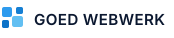
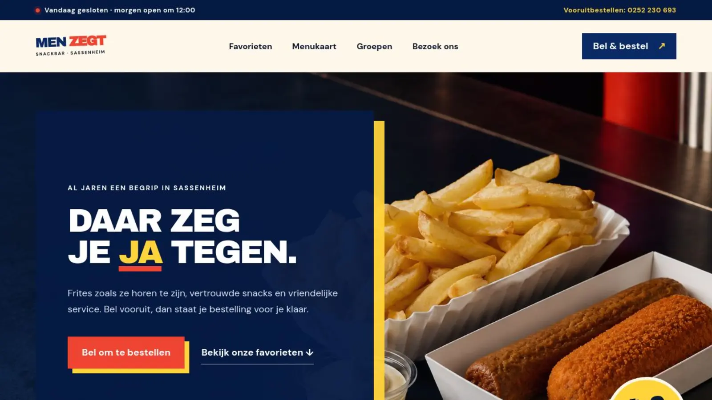
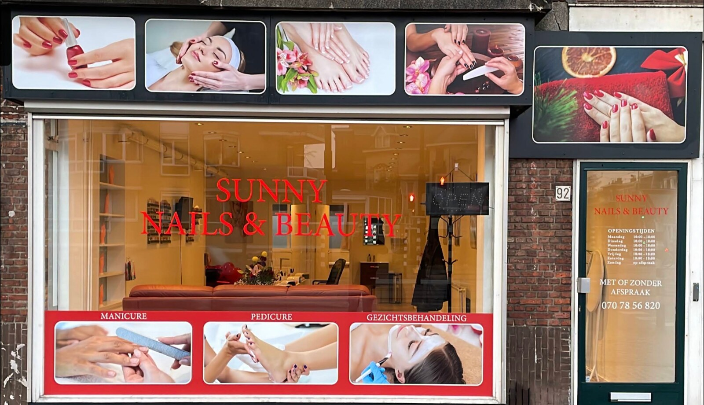
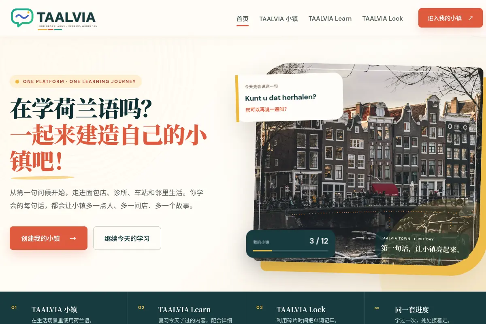

Kerk & non-profit
Evangelische Kerk Nederland
Een tweetalige kerkwebsite met twee locaties, actuele preken en activiteiten — volledig in eigen beheer.
TweetaligEigen beheer
Bekijk live website ↗
Creative technology studio · Den Haag
Van een sterke website tot herbruikbare AI Skills en automatisering. Eén studio, direct contact en techniek die gewoon goed moet werken.
Bekijk wat we bouwen↘
Geselecteerd werk
Geen stijloefeningen, maar werk dat dagelijks door klanten, leden en bezoekers wordt gebruikt.
Kerk & non-profit
Een tweetalige kerkwebsite met twee locaties, actuele preken en activiteiten — volledig in eigen beheer.
Bouw & interieur
Een projectwebsite die vakmanschap laat zien en waarop de klant zelf foto’s en video’s kan toevoegen.
Bekijk live website ↗Horecawebsite
Een nieuwe website met een duidelijke menukaart, openingstijden en praktische informatie voor bezoekers.

Previewproject · RijswijkBeauty · website van één pagina
Een overzichtelijke en praktische website voor een lokale nagelsalon. Bezoekers zien direct de prijzen, openingstijden en parkeerinformatie en kunnen meteen bellen voor een afspraak.
Voor wie we bouwen
Eigen producten
Soms bouwen we ook onze eigen digitale producten.

Eigen digitaal productEigen digitaal product
Een taalplatform waarin leren, interactie en een digitale wereld samenkomen.
Bekijk project ↗
Eigen technologieplatformEigen technologieplatform
Een eigen technologieplatform voor gecontroleerde AI-systemen, met producten voor operations, klantcontact en travel technology.
SINAN · NEXORA · NAVORA
Bekijk project ↗AI Skills
Nieuwe, herbruikbare AI-werkwijzen voor design, schrijven, business en productiviteit. Klein begonnen, maar direct bruikbaar.
Laat AI een pagina beoordelen als een senior designer en krijg concrete verbeterpunten in volgorde van impact.
Maak stijve of vertaalde tekst natuurlijk Nederlands zonder betekenis of toon te verliezen.
Zet notulen of transcript om in besluiten, taken, eigenaren en open punten zonder informatie te verzinnen.
Zo werkt het
Geen accountmanager en geen ingewikkelde overdracht. We bespreken wat klanten moeten zien en doen; daarna krijg je snel iets concreets terug.
Bespreek je project ↘We brengen je bedrijf, klanten en belangrijkste doel terug tot een helder plan.
Je krijgt snel een echte eerste versie. Geen abstract verhaal, maar iets waarop je kunt reageren.
Na de lancering blijf je één persoon bellen voor techniek, onderhoud en wijzigingen.
Waarom GOED WEBWERK
Je werkt rechtstreeks met de maker van je website. Duidelijke afspraken vooraf, aandacht voor mobiel en Google, en ook na de lancering iemand die bereikbaar blijft.
Duidelijke prijzen
Van een sterke enkele pagina tot een website met eigen beheer. We bevestigen de vaste prijs voordat we beginnen.
€249
Of €39 per maand in het eerste jaar · €0 aanbetaling · inclusief hosting, beveiliging, back-ups en kleine aanpassingenBijvoorbeeld: nagelstudio, kapper of zelfstandig dienstverlener
€349
Of €59 per maand in het eerste jaar · €0 aanbetaling · inclusief hosting, beveiliging, back-ups en kleine aanpassingenZoals Men Zegt: menu, openingstijden, locatie en directe acties
€499
Of €79 per maand in het eerste jaar · €0 aanbetaling · inclusief hosting, beveiliging, back-ups en kleine aanpassingenZoals Kaida: meerdere pagina’s, projecten en eigen contentbeheer
€999 vanaf
Of €139+ per maand in het eerste jaar · €0 aanbetaling · inclusief beheer, hosting, beveiliging, back-ups en ondersteuningZoals de kerkwebsite: meertalig, preken, activiteiten en uitgebreid beheer
Veelgestelde vragen
Het domein en je zakelijke accounts blijven op jouw naam staan. Je zit niet vast omdat iemand anders de toegang beheert.
Een overzichtelijke bedrijfswebsite is meestal binnen 7–14 werkdagen klaar. De planning hangt vooral af van teksten, foto's en feedback.
De doorlooptijd begint zodra alle benodigde materialen compleet zijn en, indien van toepassing, de eerste betaling is ontvangen. De offerte omvat twee gebundelde correctierondes. Na ontvangst van het concept vragen we je om binnen drie werkdagen alle feedback gebundeld door te geven. Als de aanlevering van materiaal of feedback meer dan vijf werkdagen vertraging oploopt, pauzeren we het project en plannen we het opnieuw in op basis van de dan beschikbare ruimte.
Ik help je de inhoud en volgorde helder te krijgen. Ontbrekende teksten kunnen we samen opstellen en we spreken vooraf af welke foto's nodig zijn.
Het basispakket bevat één taal. Een tweede taal kost €99 extra; een derde taal kost daarna nog €79 extra. Voor een gewone kleine presentatiewebsite zijn het structureren van de vertaling, de taalschakelaar, de opmaak per taal en de basis-SEO inbegrepen. Bij veel inhoud, vakterminologie of een verzoek om professionele menselijke vertaling maken we een aparte prijsopgave op basis van de hoeveelheid content.
Kennismaken
Vertel kort over je bedrijf. Je krijgt persoonlijk antwoord — zonder verkooppraatje of verplichtingen.
Communicatie mogelijk in Nederlands, 中文 en English.